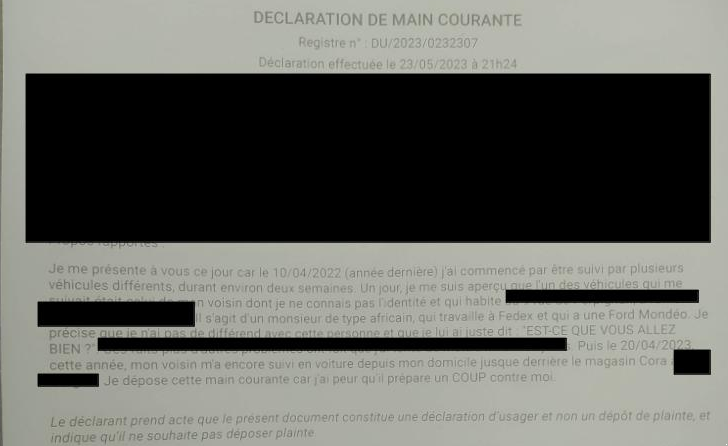
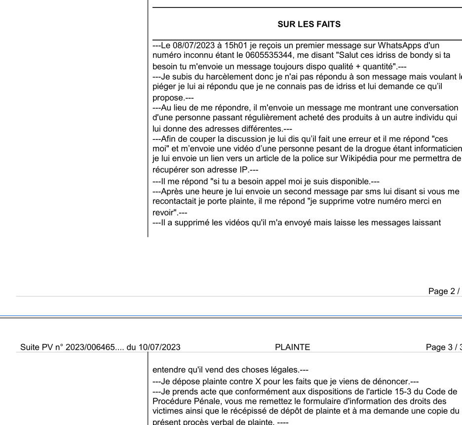
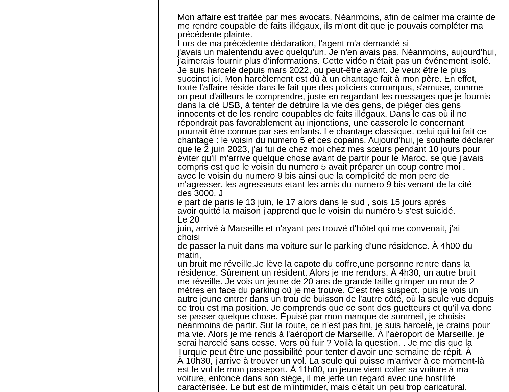
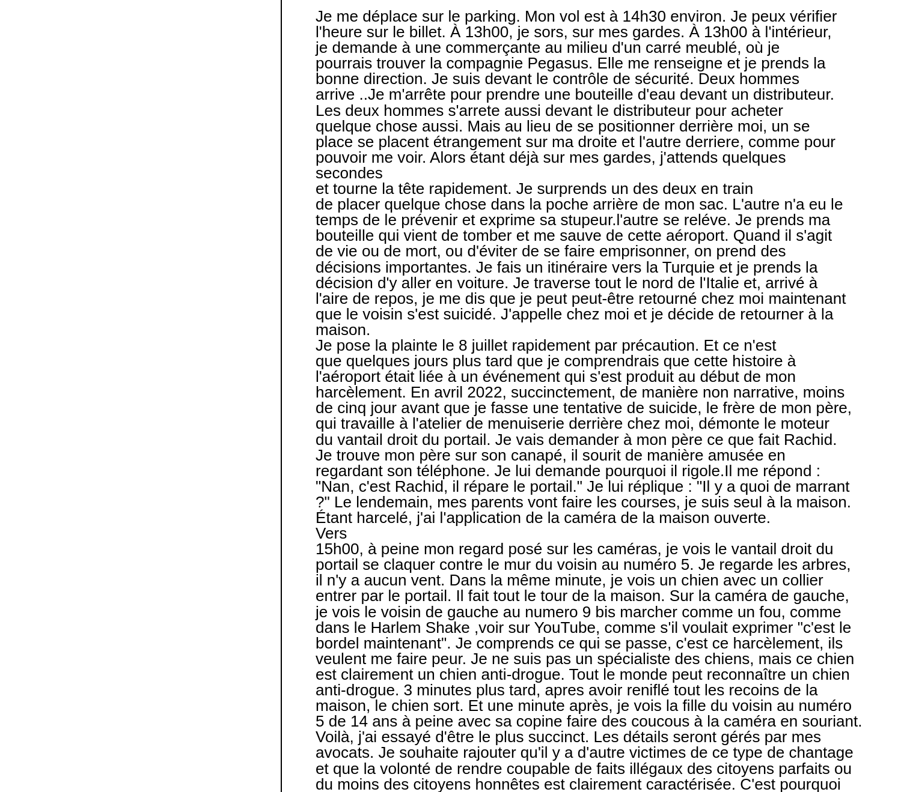
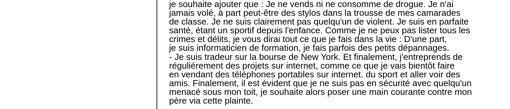

Mon histoire
Je m'appelle Akli X. X car je souhaite rester anonyme. Je vis à Tremblay-en-France en Seine-Saint-Denis.
Je pense qu'en parallèle de la justice, la meilleure protection quand on essaie de vous causer du tort est
de rendre son histoire publique. J'ai déposé une plainte afin de me protéger, et je vous la partage ici. Je
vous fais part de mon histoire car elle confirme le fait qu'il y a des brebis galeuses dans la police et
qu'il serait utile une bonne fois pour toute de mettre au cœur du débat public la valeur intrinsèque de la
parole d'un policier. L'autre question concerne bien sûr le risque posé à la société dans son ensemble de
l'appartenance de policiers à certaines organisations non transparentes vis-à-vis de leurs concitoyens.
Il y a deux semaines, un journaliste du système vient de sortir un livre intitulé « Les réseaux ssecrets de
la police : Loge, influence et corruption », livre qui supporte clairement mon récit, ils avouent eux-mêmes
leur corruption.
Le 23 mai 2023, je dépose une main courante contre le voisin du numéro 9 bis à notre gauche. J'avais compris que le voisin à droite au numéro 5 complotait contre moi sur une base de chantage à mon père et avait demandé au numéro 9 bis de m'agresser, les agresseurs étant les amis du numéro 9 bis.
Le 2 juin, je pars chez mes sœurs afin d'éviter qu'il m'arrive quelque chose.
Le 17 juin, j'apprends que mon voisin qui complotait contre moi s'est suicidé.
Le 20 juin, on tente de me placer de la drogue dans mon sac à l'aéroport de Marseille.
Le 22 juin, je rentre à mon domicile.
Le 8 juillet, un inconnu me contacte sur WhatsApp avec des gyrophares en guise d'introduction de son offre commerciale, puis laisse entendre de manière certaine que je le connais.
Le 8 juillet, je porte plainte pour diffamation non publique.
Le 13 juillet, je reçois un email intriguant et menaçant après ce que j'ai déjà vécu, avec une adresse inconnue, et comme caractéristique une faute grossière d'orthographe pour me faire savoir qu'il s'agit de la/les même personne que les messages reçus sur WhatsApp.
Du 8 juillet au 18 septembre, je ne suis sortie que deux fois tellement j'étais terrorisé. Pour ces deux sorties, je n'ai pas pris une seule fois mon véhicule que j'ai rentré dans la cour de notre domicile, je prenais seulement celui de mon père car je savais qu'ils avaient pour ambition de me rendre coupable de consommation de drogue et que je savais qu'ils penseraient comme moi à la possibilité de passer par mon père pour me placer de la drogue dans la voiture. Je ne vais pas entrer dans les détails, mais je vous le dis, en prenant la voiture de mon père, j'ai évité de me faire arrêter avec de la drogue qui a été placée dans ma voiture. Puis quand ils ont compris que j'avais compris et qu'ils ont appris que j'avais pris des avocats, ils ont abandonné l'opération et la drogue a été rendue.
Le 18 septembre, je dépose une plainte finale afin de me protéger et dénoncer cette tentative de me rendre coupable de faits illégaux.
  Questions / réponses
Pourquoi je pense qu'il s'agit de policiers corrompus ?
- Déjà concernant l'incident de 2022, je
ne connais personne qui possède des chiens anti-drogue (brigade canine) que la police.
- La deuxième question est qui possède de la drogue ? Il y a les vendeurs, les consommateurs et la police.
Les vendeurs la vendent, les autres la consomment, je ne vois que la police pour faire ça.
- La
troisième est le message WhatsApp, le double sens de l'utilisation des gyrophares pour l'annonce et la
police est plutôt clair.
Concernant le numéro des messages WhatsApp. J'avais envoyé un lien me permettant de récupérer son
adresse IP. Son adresse était 83.137.1.193.Le traceoute atteignait un routeur dans l'est parisien à
Vincennes, ce qui concorde avec la ville de Noisy-le-Sec mentionnée dans les messages WhatsApp. Je sais que
je ne pourrais pas m'approcher plus près de la localisation de ce criminel car j'ai pu récupérer le type
d'appareil qui est un iPhone, or la manière dont le routage est fait sur les mobiles est différente que sur
les lignes internet fixes. Sur les mobiles, les opérateurs utilisent le CGNAT qui est une technique de routage gérant
la traduction d'une petite pool d'adresse publique IPv4 vers soit des adresses IPv6 ou un réseau privé
d'adresse IPv4. En gros, il n'est pas possible de connaître son identité. Le seul moyen est de demander à
l'opérateur via une enquête. Néanmoins, on voit que
l'adresse IP appartient à Lycatel Distribution Uk Limited, autrement dit, Lycamobile. Est-ce
vraiment une surprise ? Si vous ne savez pas, Lycamobile, Lebara Mobile, etc., sont des opérateurs MVNO
permettant d'acheter une puce à l'épicerie sans fournir de pièce d'identité. Le dernier traceroute atteint
seulement Londres, où se trouve le siège de Lycamobile, ce qui indique que la puce a été coupée.
Pourquoi je mentionne certaines "organisations non transparentes" ? Parce que le chantage qu'a
subi mon père et surtout moi est lié à son ancienne appartenance à la franc-maçonnerie. Je l'ai compris tout
seul avant que mon père me le dise. Il a fréquenté la franc-maçonnerie pendant une période de 3 à 4 ans
entre 1984 et 1987, il y a donc maintenant 36 ans, avant que Dieu le remette d'équerre. Depuis 2022, j'avais
compris que l'histoire était une histoire de chantage. En février 2023, j'ai appris que le voisin du numéro 5 n'avait pas payé mon père alors
que mon père lui a fabriqué et installé toutes les menuiseries de sa maison. Ca renforçait ce que j'avais
compris.
Comment expliquer la participation de mon oncle ? Eh bien, il se trouve que pour lui, je lui ai
fait perdre 9 000 euros en 2017 dans le bitcoin. La réalité est qu'en 2017, il entendait toute la journée "bitcoin,
bitcoin, bitcoin", alors il m'a demandé d'investir pour lui. J'ai
refusé à plusieurs reprises, puis je l'ai prévenu du risque et lui ai dit que je prendrais 20% pour gérer
quotidiennement son investissement. Il a accepté, puis en décembre, je lui avais fait gagner 17 000 euros.
Il ne m'a jamais demandé de les retirer. Le 16 décembre, je pars au ski alors que le bitcoin a une courbe
exponentielle, le 17, le bitcoin atteint son pic à 20 000 euros et chute. Après la première chute, il voulait attendre et espérait que ça reparte.
Puis, après un an, son investissement valait 3 000 euros, a commencé à me dire que je lui avais fait perdre, patati patata. Et finalement, alors que je
devais lui rendre 3 000 euros, il a préféré se venger injustement en participant à cet harcèlement.
Après avoir provoqué ma tentative de suicide, il a vraiment regretté et depuis lors, il semble etre sortie des ténèbres pour reprendre le droit chemin.
Conclusion
Voilà ce qu'il est possible de vivre en 2023 en France, pourtant je ne suis ni le fils d'un politique, ni je suis journaliste ou opposant politique ...
Il semble qu'en ces temps si vous ne combatez pas le mal activement c'est le mal qui viens a vous.
Je n'ai aucune idée de la casserole en question. Peut-être qu'ils lui ont
fait chanter son ex-appartenance à la franc-maçonnerie ou autre chose. Je n'en sais rien, et cela ne
m'intéresse pas pour tout vous dire.
.
J'espère que cette histoire servira à ouvrir les yeux des gens sur ce que certains sont capables de faire pour s'amusé et sur le dangereux mariage entre la police et la franc-maçonnerie.
Concernant ma relation avec la police, j'avais 18 ans en 2005, et malgré le fait qu'une mauvaise image de la banlieue s'est développée depuis les années 90 avec l'arrivée de la musique rap etc, ma relation avec la police a toujours été très bonne. Je ne peux même pas compter le nombre de fois où j'oubliais mes papiers, l'assurance, je roulais un peu vite, un problème sur la voiture. J'ai toujours été cordial et sympathique, et ils ont toujours été cordiaux et sympathiques et systématiquement cléments. Si je devais donner un pourcentage de fois où je suis tombé sur des policiers agressifs me traitant comme un délinquant alors que je n'avais rien fait, je dirais : 3 fois sur cent. Je ne sais pas vous, mais j'ai senti comme une volonté par les médias mainstream de créer une opposition entre la population et la police depuis un certain nombre d'années, et surtout maintenant une volonté de corrompre l'âme même du policier et sa relation avec le ciel.